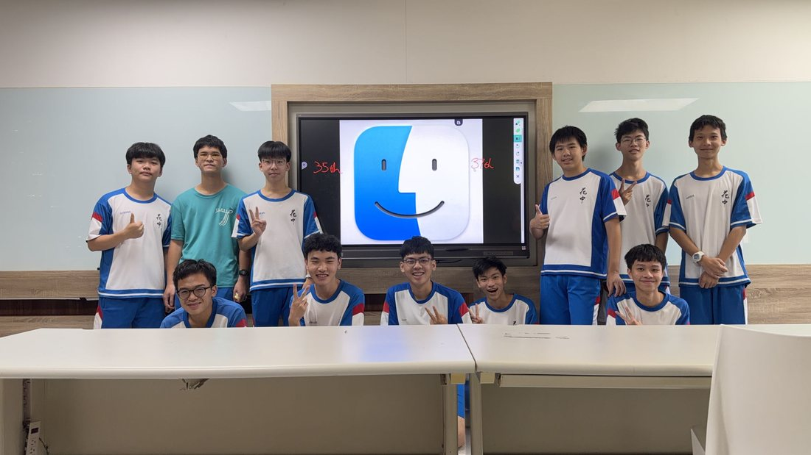

2025 – 26 · TEACHING
Deep-Learning Reading Group
A theory-first study group I co-founded — I ran the AI track.

WHY IT EXISTS
Juniors who wanted to start research kept hitting the same wall: tutorials teach tools, not understanding. You can copy a training script in an afternoon, but when the loss curve does something strange, nothing in the tutorial tells you what to check. So together with two classmates, Chih-Jui Yang and Yu-Jui Shen, I co-founded a twice-weekly study group for junior students in the CS track. It ran as two parallel tracks: they taught competitive programming — complexity, graph theory, DP, STL — and I designed and taught everything on the AI side.
THE AI TRACK
My curriculum ran a full semester, from first principles to the current frontier: what a neural network actually computes; a hands-on setup session (Linux, SSH, national TWCC compute, first PyTorch projects); convolution and its use cases; then a three-part Transformer arc — the architecture itself, common language and ViT applications, and contrastive learning plus agentic harnesses; closing with two sessions introducing reinforcement learning. Every topic came with the math derivations — gradient descent, backpropagation, parameter updates — because theory should map onto how real models behave. My rule for the group: in the AI era, coding can be assisted; a deep grasp of the theory is the lasting competitive edge.
WHAT TEACHING TAUGHT ME
Preparing each session means compressing a topic until I can rebuild it from first principles on a whiteboard — and every question I can't answer cleanly marks a hole in my own understanding. Leading the group has been as much about auditing my own foundations as building theirs.